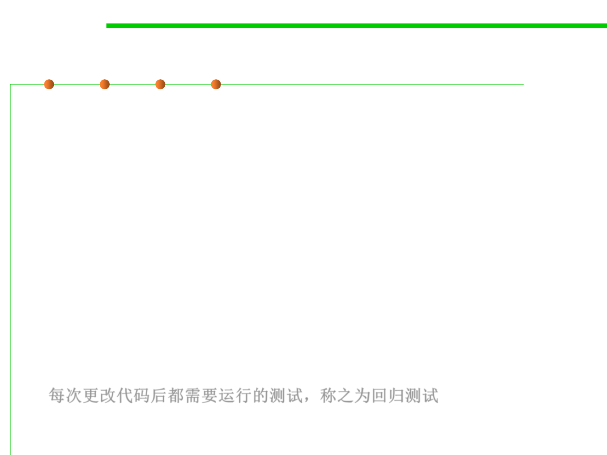

Regression testing
7.5 Testing and Test-First Programming
▪ Once you have test automation, it’s very important to rerun your
tests when you modify your code.
▪ Software engineers know from painful experience that any change to
a large or complex program is dangerous.
▪ Whether you’re fixing another bug, adding a new feature, or
optimizing the code to make it faster, an automated test suite that
preserves a baseline of correct behavior – even if it’s only a few tests
– will save your bacon.
▪ Running the tests frequently while you’re changing the code
prevents your program from regressing — introducing other bugs
when you fix new bugs or add new features.
▪ Running all your tests after every change is called regression testing.
每次更改代码后都需要运行的测试，称之为回归测试